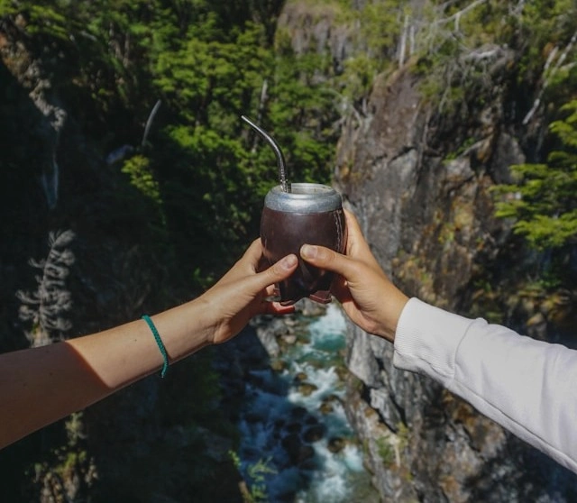
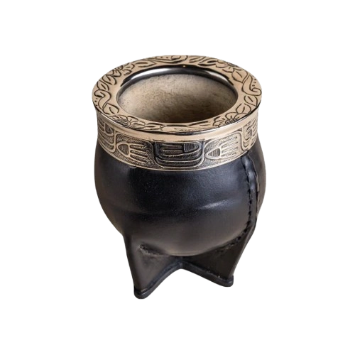
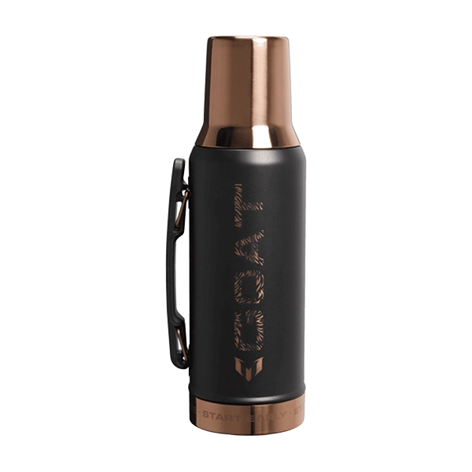
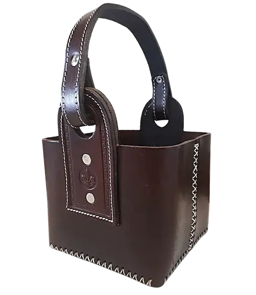
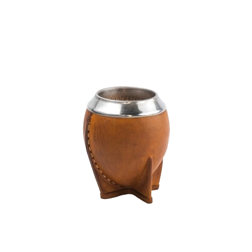
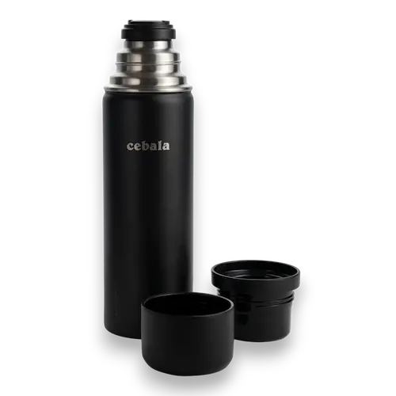
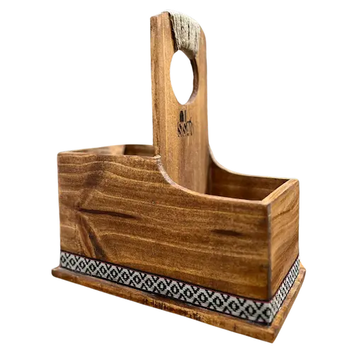

About Us
We are a traditional Uruguayan Mate store. Our love for the mate is as deep as love can be. We recognize the tradition of drinking a good mate to start the routine, or maybe to study or work. Therefore, we have the best products to give you the best experience.

Featured Products





